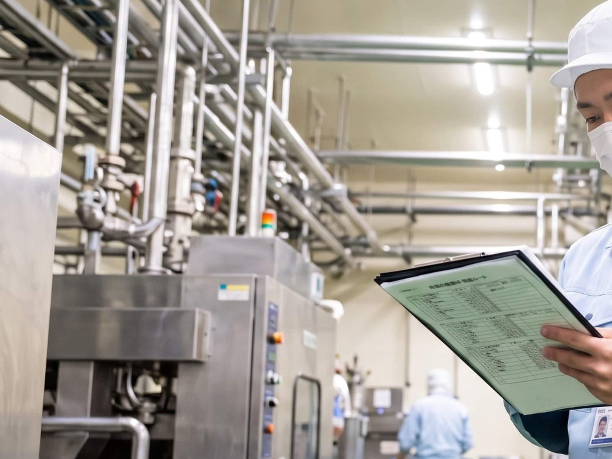

INTERVIEW
Cleanlinessクレンリネス（衛生清掃）
食品プロセスセンターの清掃を、計画から支える。
PROFILE STORY
01CAREER STEP
これまでのキャリア
2016PALへ中途入社。担当エリアの派遣業務と、食品現場の清掃業務を担当。
—清掃を担当する現場が増え、クレンリネス課が新設。エリアMGRに。畜産の機械洗浄だけでなく、センター全体をまるごと清掃する範囲まで広がる。
NOWクレンリネス課 運営MGR。複数センターの清掃管理と、課の運営、清掃案件の営業を担当。
02JOINING REASON
PALに入社した理由
働き方を見直し、一つの現場に向き合える環境へ。前職は転勤が多く、身体的な負担が年々大きくなっていた。入社前に現場を見学し、転勤がないこと、ひとつのセンターに集中できる環境であることを確認したことが決め手になった。
03WORK PHILOSOPHY
仕事で大切にしていること
清掃箇所だけではなく、現場全体を見る。安全衛生は当然のこととして、各センターの困りごとをいち早くキャッチし、改善につなげて信頼関係を築く。そのために、現場では常にアンテナを張っている。
REASON
働き方を見直し、一つの現場に向き合える環境へ。
前職では、ハウスメーカーの支店長として販売計画と実績の集約や定期イベントの開催を、ファーストフードチェーンの店長として複数店舗の運営を担当していました。店舗運営だけでなく、地域のイベントにも数多く関わってきたといいます。
一方で転勤が多く、身体的な負担は年々大きくなっていました。「体力的な限界を感じて退職した」とS.Kさんは振り返ります。
PALに入社する前に現場を見学し、転勤がないこと、ひとつのセンターに集中できる環境であることを確認しました。それが入社の決め手でした。
WORK
清掃は、「汚れてからきれいにする」だけではない。
PALのクレンリネスは、食品プロセスセンターなどで清掃業務を行いながら、汚れの状態や頻度を確認し、清掃計画や現場との連携まで担う仕事です。
現在は食品プロセスセンターでの清掃業務を担当し、複数のセンターの清掃と衛生管理の維持を担っています。クレンリネス課の運営MGRとして、清掃案件の営業にも関わります。
入社当初は畜産の機械洗浄が中心でしたが、いまはセンター全体をまるごと清掃する範囲まで広がりました。担当する現場を広げていくための横展開にも取り組んでいます。
清掃してきれいになるのは当たり前。その前提の上で、どこがどの程度汚れるのか、どのくらいの頻度で清掃する必要があるのかを考えます。その内容を年間の清掃計画へ落とし込み、現場と常に連携しながら、汚れの進み方をいち早く捉えて、汚れた状態を放置しないようにする。それも、S.Kさんの仕事のひとつです。
清掃の進め方は、この4つの繰り返しです。
- 01清掃する
食品プロセスセンターなどの現場で、清掃を実施する。
- 02状態と頻度を見る
どこがどの程度汚れるのか、どのくらいの頻度が必要かを考える。
- 03年間計画に落とす
考えた内容を、年間の清掃計画へ落とし込む。
- 04現場と連携する
現場と状態を共有し、汚れた状態を放置しない。
VALUE
こだわりをもってピカピカにする。
相手を感動させるのが基準です。
— S.K / クレンリネス課 MGR
APPROACH
清掃箇所だけではなく、現場全体を見る。
安全衛生は当然のこととして、各センターの困りごとをいち早くキャッチし、改善につなげて信頼関係を築くこと。そのために、現場では常にアンテナを張っています。
衛生面で気になる状態があればすぐに報告し、清掃として取り組めるよう相談を重ねていく。その積み重ねが、次の依頼につながっていきます。

EPISODE
手が届いていなかった場所まで、きれいにする。
印象に残っているのは、機械の内部など、これまで十分に手が届いていなかった箇所まで徹底して清掃したときのこと。委託先の担当者から評価の言葉をもらったことが、いまも記憶に残っているといいます。
REWARD
「お願いしたい」と言われることが、仕事の評価になる。
担当しているセンターからお礼や感謝の言葉をもらったとき。新しい依頼を受けたとき。自分の仕事が評価されたと感じたとき。そういう瞬間にやりがいを感じるといいます。
一緒に働く人たち。
各センターの社員は、与えられた数値目標を達成するため、日々のセンター運営に集中しています。やり切ったことを互いに共有し、それが数字として返ってくることに達成感を感じている。そんな現場だといいます。
LEARNING
分からないことは、調べる。専門家に聞く。
清掃については動画なども参考にしながら知識を増やしてきました。機械のメンテナンスは、メーカーから正しい方法を教わっています。「勝手に触って壊れたら大変なので」。
最近では、資料の作成にAIも活用しています。切り替えたときは大変だったものの、いまでは当たり前になりました。
CHALLENGE
まず向き合う。それでも難しければ、次へ進む。
解決しない案件はない。その仕事に向き合って、解決方法を探る。
まずは目の前の仕事に向き合い、解決方法を探す。こだわりを持って、自分の仕事に自信を持っていれば、解決に向かっていく。それでも難しいときは、必要以上に引きずらず、次の仕事に切り替える。S.Kさんは、そうやって一つひとつ進めています。
FUTURE
クレンリネスの現場を、もっと広げていく。
これからは、担当する現場の数を増やし、会社に貢献していきたい。プライベートでは、旅行を増やしたいと話します。
A DAY IN THE LIFE
クレンリネスの一日。
清掃の実施と、各センターの進捗・終了報告の確認を重ねていく一日です。ここで紹介しているのはS.Kさんの一日の一例で、PAL全社やクレンリネス課全員の勤務時間・勤務形態を示すものではありません。
- 業務開始
勤怠の確認・入力、売上と各センターの進捗確認。清掃実施報告と資料・報告書の作成、見積や請求書の作成、協力会社との連絡・相談。
- クレンリネス課MTG
毎週火曜日に実施。
- 運営シフトの作成
その日の運営シフトを組み、清掃MTGを実施。
- 清掃前朝礼・清掃開始
日常清掃と特別清掃を実施。
- 現場巡回
各現場の状態を自分の目で確認。
POINT 自分の目で見て、次の計画に反映する。 - 作業終了報告の確認
24時頃にかけて、各センターの作業終了状況を順に確認。
- 点検結果を報告し、業務終了
その日の点検結果をまとめて報告。
WHO FITS
こんな方と働きたい。
S.Kさんが考える、クレンリネスの仕事に向いている人の姿です。応募の必須条件ではありません。
- 何事もやり遂げようとする行動力・達成力のある方
- 観察力のある方
- コミュニケーションが取れる方
- スタッフを大事にする方
- きれい好きな方
MESSAGE
現場をきれいに維持管理し、
働きやすい環境を、
スタッフと一緒につくっていきましょう。
— S.K / BPO・クレンリネス課 MGR
RELATED
他の社員インタビューも見る
職種によって、仕事の進め方も向き合い方も違います。気になる仕事から、ほかの社員の話もご覧ください。